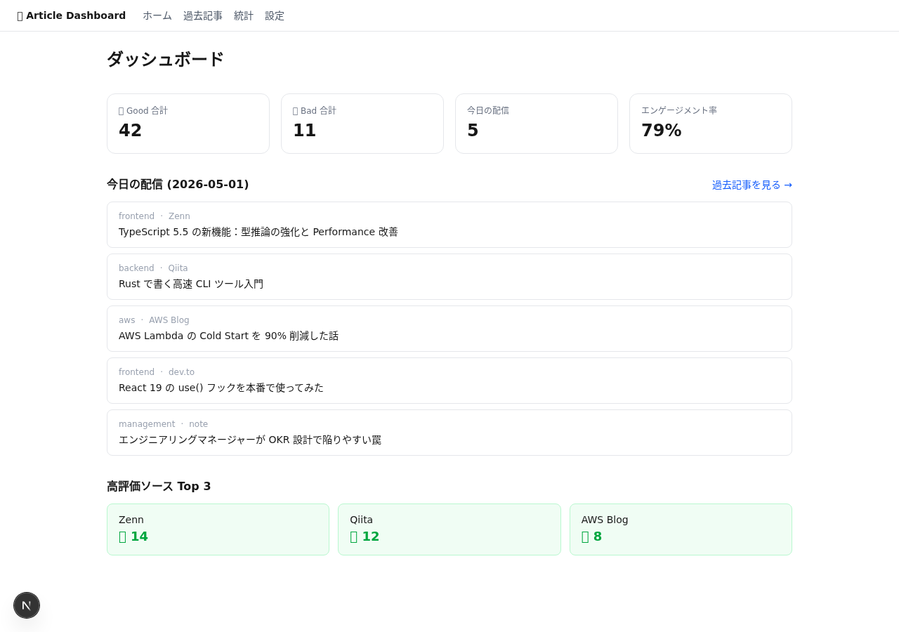
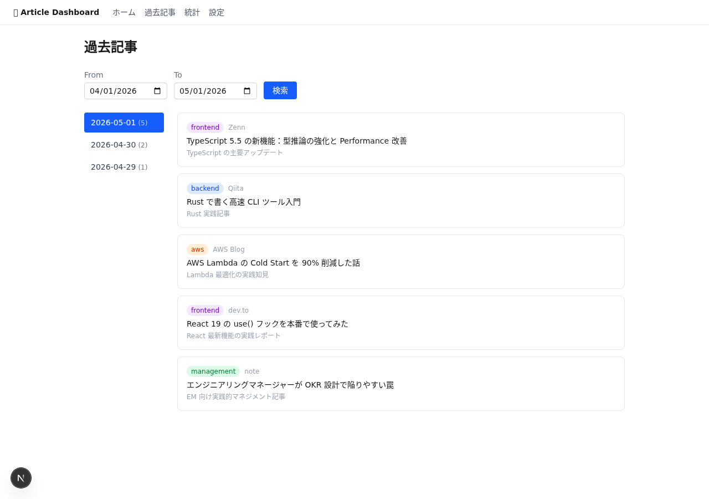
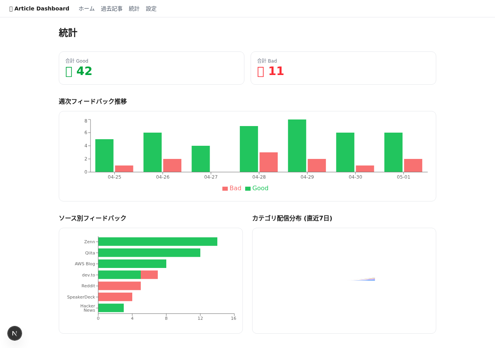
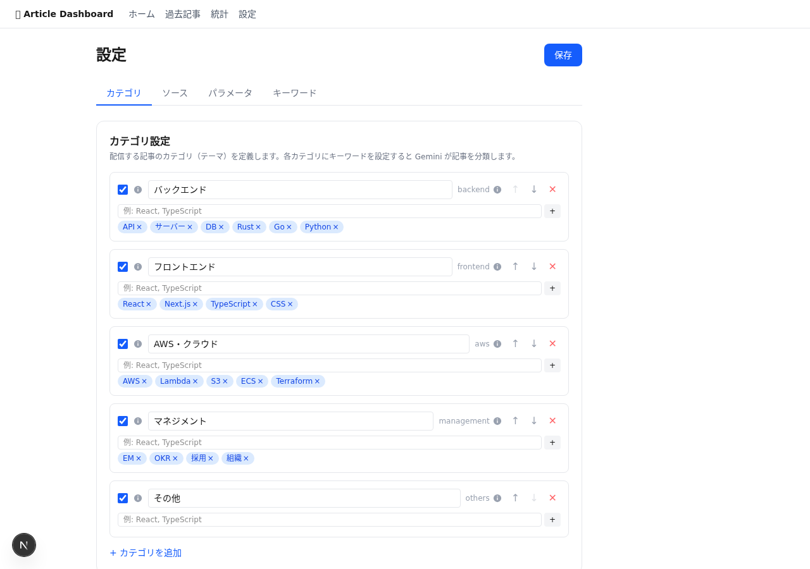

特徴
⚡
サーバーレス・ゼロコスト
GitHub Actions + Cloudflare 無料枠で完全無料動作
🤖
AI 選定
Gemini 2.5 Flash でカテゴリ別に並列選定、優先キーワード反映
📊
フィードバック学習
👍/👎 の評価履歴を蓄積し、選定精度を継続改善
🎛️
ダッシュボード
過去記事・統計・配信設定を Web UI から閲覧・編集
🔗
多ソース収集
RSS 13 フィード・Qiita・dev.to・HN・Reddit・SpeakerDeck
🔒
Basic Auth 保護
ダッシュボードは DASHBOARD_SECRET でパスワード保護
ダッシュボード スクリーンショット

ホーム — サマリーカード + 今日の配信

記事一覧 — 日別アーカイブ

統計 — フィードバック分析・週次トレンド

設定 — カテゴリ・ソース・パラメータ管理
アーキテクチャ